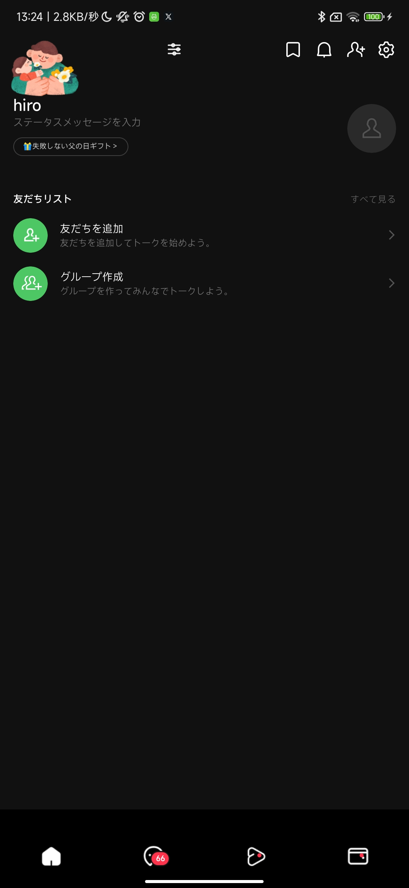
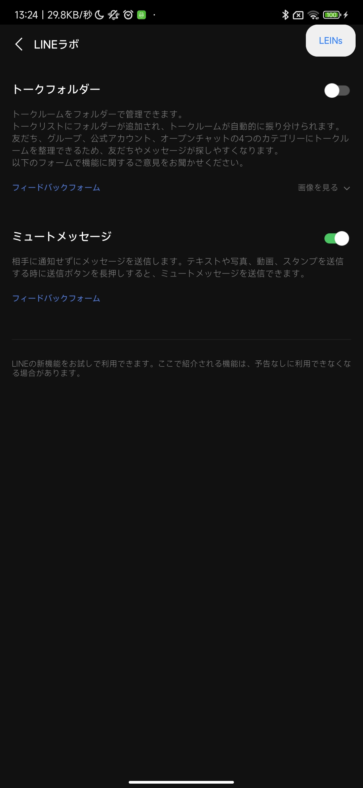

LINEを開く
ホーム真ん中上の歯車、またはLINEラボ右上のLEINsボタンを押します。
導入する方へ
NPatch または LSPatch をインストールし、端末のシステムABIに合うパッチ済みLINEをダウンロードしてください。初回ログインまではスコープを選択しないのがポイントです。
最初の3ステップ
ホーム真ん中上の歯車、またはLINEラボ右上のLEINsボタンを押します。
「広告」「通知」「既読」など、変えたい内容に近い項目を選びます。
説明を読み、必要なものだけオンにします。変わらないときはLINEを開き直します。
実際の画面
ここには、実機で撮影した画面だけを載せています。


購入方法
ライセンス認証の画面で「購入する」を押すと、購入プランを選べます。購入後に届いたライセンスキーを入力して「認証」を押してください。
LEINsを開き、ライセンスキー入力画面が出たら内容を確認します。
購入プランの選択画面で、自分に合うプランを選びます。このページの購入リンクからも開けます。
購入後に届いたライセンスキーを入力し、「認証」を押します。
0円
まず動作を確認したい方向けです。
250円 / 月
必要な期間だけ使いたい方向けです。
購入ページを開く2,600円 / 年
継続して使う方向けです。
購入ページを開く2,500円
メールアドレスに届いたクーポンコードを、購入ページの「割引コードを追加」に入力してください。
購入ページを開く2,600円
購入後の追加操作が不要な方向けです。
購入ページを開く表示金額は2026年6月21日に確認した金額です。購入前に表示される最終金額も確認してください。
できること
LINEの下に並ぶボタンや表示を、見やすく整えます。
ホーム画面ホーム画面に表示されるサービスやお知らせを整理します。
チャットリストトーク一覧を、必要なものだけに整えます。
ブラウザLINEでリンクを開くときの動きを選べます。
テーマLINEの明るさや色合いを好みに合わせます。
ボタン設定画面上のボタンや文字を使いやすい形に整えます。
広告広告やおすすめ表示を減らして見やすくします。
プライバシー・既読既読の付き方や、あとで読み返すための動きを調整します。
チャットメッセージの送信、保存、返信を使いやすくします。
通知届く通知を減らしたり、通知からすぐ操作したりできます。
着信音・発信音LINE通話の画面、音量、着信音を使いやすくします。
バックアップ・復元大切なトークを保存し、必要なときに戻します。
その他普段は変更しなくてもよい補助的な設定です。
一致する項目がありません。
安心して使うために
ひとつずつ変えると、困ったときにすぐ元へ戻せます。
LINEをいったん閉じて、もう一度開いて確認します。
トークや写真は、先にバックアップしておくと安心です。
困ったとき
画面の画像と、どこで困ったかを添えて相談してください。